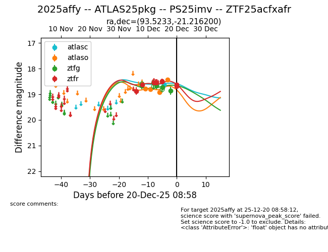
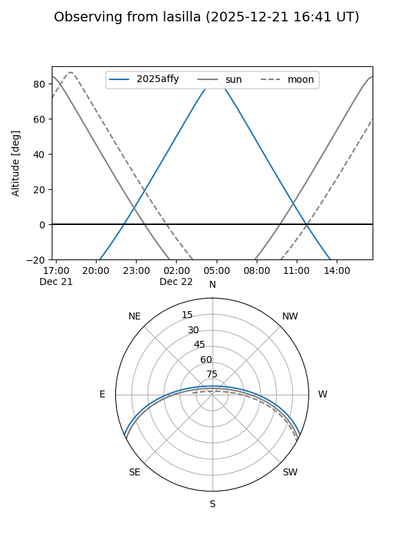
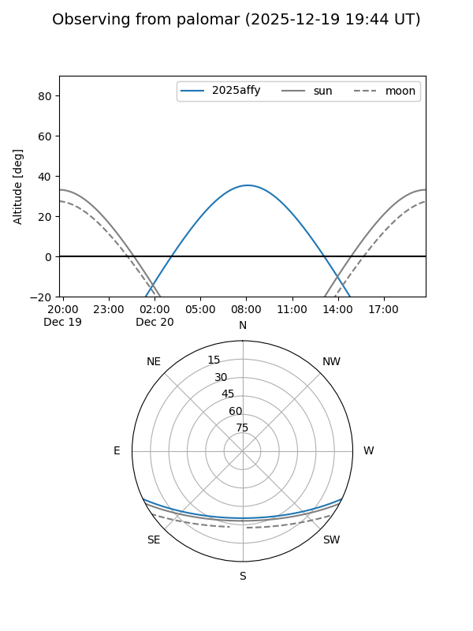
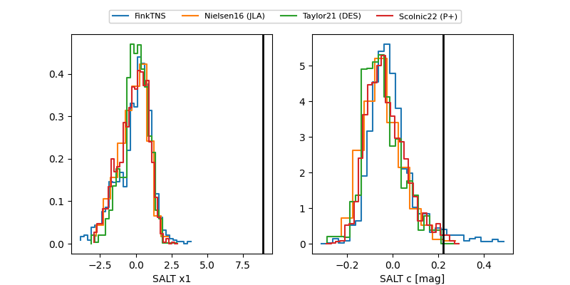

2025affy
Target 2025affy at 2025-12-22 17:31
Aliases and brokers:
FINK: fink-portal.org/ZTF25acfxafr
Lasair: lasair-ztf.lsst.ac.uk/objects/ZTF25acfxafr
ALeRCE: alerce.online/object/ZTF25acfxafr
TNS: wis-tns.org/object/2025affy
YSE: ziggy.ucolick.org/yse/transient_detail/2025affy
alt names
ZTF25acfxafr (ztf,fink_ztf)
2025affy (tns,yse)
PS25imv (panstarrs)
ATLAS25pkg (atlas)
Coordinates:
equatorial (ra, dec) = 93.5233,-21.21620
equatorial (HMS+DMS) = 06:14:05.59,-21:12:58.32
galactic (l, b) = (228.3170,-17.43413)
Flags:
Photometry:
last atlasc=18.62, atlaso=18.43, ztfg=19.18, ztfr=18.80
1 atlasc, 4 atlaso, 10 ztfg, 10 ztfr detections
Lightcurve

Visibility


Additional plots
